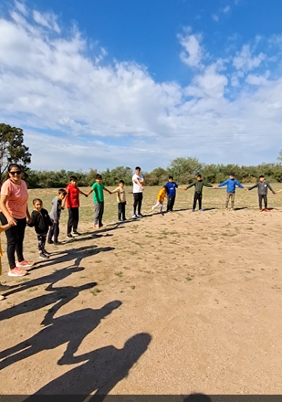
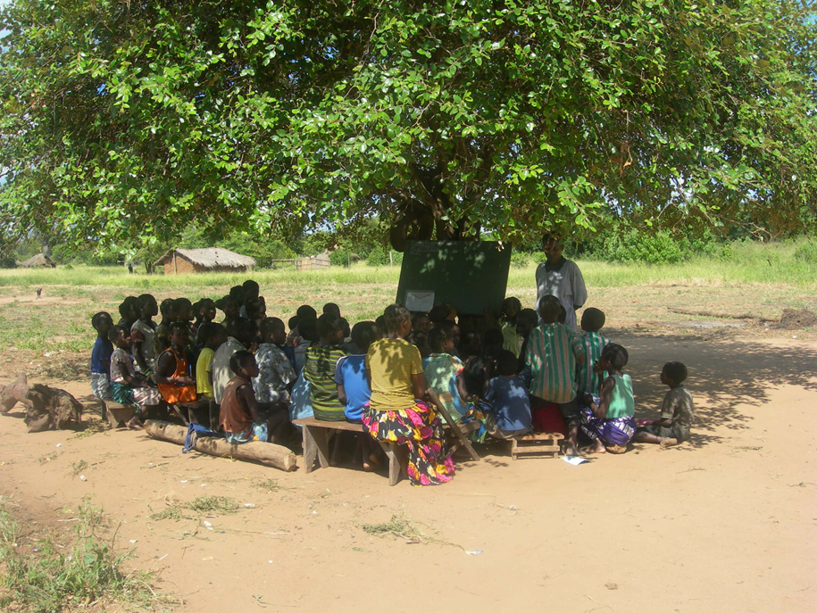

Protección integral de infancias y juventudes
Las políticas diseñadas para la protección integral de IJ se aplican al Consejo de Administración y a todas las personas que se vinculen en proyectos con Praxis y que involucren a IJ. Nuestras acciones priorizan el interés de IJ a partir de la participación informada y se realizan sin discriminación alguna, asegurando además su implicación activa en decisiones que les afecten, la generación de entornos seguros y libres de violencia con equidad de género, accesibilidad, confidencialidad y respeto.
Praxis incorpora evaluación de riesgos en las actividades que involucre IJ, capacitando a los equipos de trabajo en prevención, detección temprana y actuación ante situaciones de vulneración de derechos. En consecuencia compromete la adhesión a esta política en convenios y alianzas institucionales, estableciendo mecanismos viables, claros, realistas y accesibles para la denuncia de situaciones de riesgo o vulneración.

Toda persona vinculada a Praxis debe:
- Mantener un trato respetuoso y profesional con IJ,
- Evitar cualquier conducta que pueda interpretarse como abuso, manipulación o trato inapropiado.
- No incurrir en relaciones personales inapropiadas o comunicaciones privadas inadecuadas con IJ.
- No difundir imágenes sin consentimiento informado de sus responsables legales.
- Informar inmediatamente cualquier situación sospechosa o vulneración detectada.

Gestión de imágenes y comunicación
Praxis incorpora evaluación de riesgos en las actividades que involucre IJ, capacitando a los equipos de trabajo en prevención, detección temprana y actuación ante situaciones de vulneración de derechos. En consecuencia compromete la adhesión a esta política en convenios y alianzas institucionales, estableciendo mecanismos viables, claros, realistas y accesibles para la denuncia de situaciones de riesgo o vulneración.
Evaluación y actualización
El Consejo de Administración de Praxis es responsable de implementar, revisar y actualizar las políticas de protección integral de IJ periódicamente. Además está comprometido con el monitoreo y la evaluación que permiten supervisar su cumplimiento. Praxis garantiza la participación de un referente designado en protección de IJ en los programas, proyectos y actividades que diseña, coordina o participa.